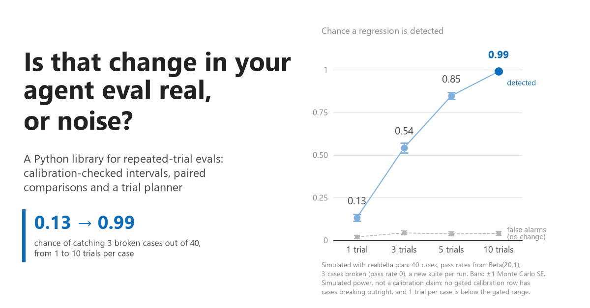

realdelta · Open-source Python library · Fall 2026
Is that change in your agent eval real, or noise?
You change a prompt, re-run the eval suite, and the pass rate goes from 82% to 86%. Agents are random, so the same agent re-run can move that much on its own. realdelta tells you whether a move is larger than that noise, and how many repeated trials per case you need before it can tell. Before trusting its intervals I checked them on a calibration grid fixed in advance, and the first run failed.
The problem
Run the same agent on the same eval twice and some cases flip: a tool call times out, the model phrases an answer differently, a long plan takes another branch. In a simulated suite of 40 cases that pass about 95% of the time, run 5 times each, two runs of the unchanged agent differed by 2 points or more in 184 of 500 pairs (36.8%) and by 4 points or more in 35 (7.0%). A 4-point move sits at the 95th percentile of pure noise there, even with 200 trials per run.
The usual fixes are to run more trials and to compare with a test, but both raise questions that are easy to get wrong. Which unit is random, the trial or the case? How many trials are enough? Does a standard test answer the question you are asking? realdelta packages one set of answers and is explicit about where they were checked.
What it does
- Pass-rate intervals in two scopes.
suiteasks how sure we are about this fixed set of cases, so only trial-to-trial noise counts.populationasks about cases like these, so case-to-case spread counts too. The two answer different questions; the population interval contains the suite interval, so it is never narrower. - Paired comparisons. Baseline and candidate run on the same cases; the change gets an interval, and
detectedmeans that interval excludes zero. - A trial planner. It simulates a suite you describe, under either a small shift on every case or a few cases breaking outright (the common agent regression), and reports the chance of detecting the change and of a false alarm for 1, 3, 5, 10 or 20 trials per case, plus the cost at prices you supply. These are simulations; the calibration grid has no rows where cases break outright, so plans for that kind of change have no calibration evidence behind them.
Results come in as one JSON Lines or CSV record per trial, and the same three operations are available from the command line. File-format errors name the file, line and field, never the value.

Checking the intervals before trusting them
An interval is only useful if it contains the truth as often as it claims. I wrote the check down before running it: a grid of simulated suites with known pass rates (for pass rates: 5 to 50 cases, 1 to 10 trials per case, case pass rates from widely spread to nearly always passing), 2,000 repetitions per row, and a gate that every gated row must cover the truth at least 93% of the time for a 95% interval. The protocol was committed before any final result existed, and each final grid ran once.
The first final run failed. With 5 cases, 1 trial each and pass rates near 100%, the Wilson interval I was using covered only 91.7%: a single failure pulls its upper bound below the truth. I did not move the gate. A written amendment added an exact analytic check and two replacement methods; both failed it. A second amendment added a third, Clopper–Pearson with the effective sample size capped at the number of trials run, which passed. Because I designed that one after seeing the second round fail, I don't count the analytic check as evidence for it; the independent evidence is the unchanged coverage tests and a fresh grid that ran once after the implementation.
| Quantity | Gated rows | Lowest estimated coverage |
|---|---|---|
| Suite pass rate | 36 | 0.956 |
| Population pass rate | 40 | 0.951 |
| Suite change (paired) | 25 | 0.945 |
The fix has a price, and the README states it: suite pass-rate intervals are about 1.11 times as wide as before (median across rows), and 7 of the 36 suite rows cover more than 99.5%. One planned feature, an interval for the population-scope change, failed its width rule in the first run and is not shipped; calling it raises an error instead of returning a number nobody checked.
Where the test and the interval disagree
A sign-flip permutation test is a standard paired test. In a simulated candidate where 3 of 40 cases fail every time (5 trials per case), the interval excluded zero in 84.6% of runs and the test's p-value was below 0.05 in 15.2%. They do not run at the same false-alarm rate: with no change, the interval flagged 4.6% of pairs and the p-value 2.8%. The test asks whether cases moved in a consistent direction across the suite, and only 3 of them moved. The interval asks the suite-scope question: is this change larger than the trial-to-trial noise of this fixed suite. realdelta is built around the suite-scope question, so it decides with the interval and reports the p-value only alongside it; the two can disagree, and the p-value's calibration was not checked. A permutation test within cases would match the suite scope; it is a candidate for the next version.
One pre-registered run on a real model
The library also needed one honest run on a real model. I generated 40 puzzles (arithmetic, letter counting, weekdays, sorting; 10 each), fixed the prompts, grader, arms and analysis in a protocol before any paid call (a written amendment, also made before any call, set the model), and ran GPT-5.6 Luna through Azure OpenAI: three arms, 5 trials per case, 600 calls in one interleaved order. A1 and A2 use the same system prompt, so they form an A/A pair; B adds "Answer immediately; do not show your working."
| Comparison | Change | 95% interval | Result |
|---|---|---|---|
| A1 vs A2 (same prompt) | −0.020 | [−0.086, +0.046] | not flagged |
| A1 vs B | −0.055 | [−0.123, +0.014] | not detected |
The A/A pair was not flagged, and the A1–B change was not detected at this scale; its interval says how large that change could still be. The more useful finding came from reading the failures. A trial passed only if the value was right and the last line had the form ANSWER: <value>. Most failures were a correct value without that prefix: ignoring the prefix, the arms got 196, 199 and 197 of 200 trials right. So the pass rates here mostly measure compliance with the answer format, not puzzle-solving. That reading is descriptive and was not part of the pre-registered analysis, and the README says so.
What I'd keep
- Decide what counts as success before the run. The gate, the grid and the rules for failures were in a committed file before the results, so a failed run led to a documented fix rather than a quiet adjustment.
- Ship the limits with the numbers. The comparison and planning reports end with notes on what they cannot tell you, and settings outside the tested range print a warning.
- Read the failures, not just the rate. On the real model, the rate looked like accuracy and was mostly formatting.
- Prefer refusing to guessing. An unchecked interval raises an error instead of returning a number.
Version 0.1.0, Apache-2.0, not yet on PyPI; installs from a clone, with tests run in CI on Python 3.10 to 3.13 on Linux and Windows. Code, the calibration protocol with both amendments, every result file and the real-model run are in the repository.
All tested settings are 95% intervals on simulated suites. The README gives the tested ranges, the assumptions each scope needs and the settings with no evidence; every gated row is in the committed grid results.